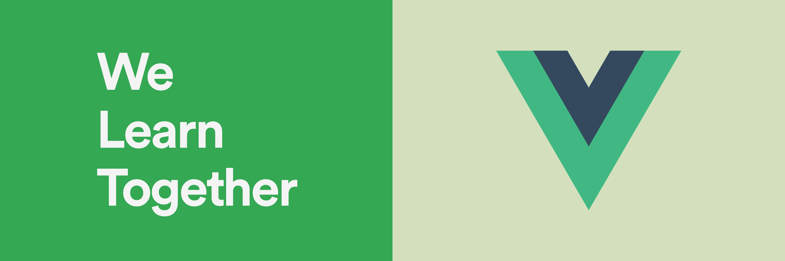

Inscrición
Podes inscribirte no evento a través de Meetup. Recomendamos ter coñecementos básicos de HTML e JavaScript para aproveitar ao máximo a sesión.
Tutorial
Preme aquí para descargar o tutorial (PDF). Podes baixar os exemplos nun arquivo de texto para copialos e probalos máis facilmente.
Proxecto
Propoñemos desenvolver una aplicación que permita engadir e borrar tarefas nunha lista. Esta aplicación deberá contar cos seguintes elementos:
- Unha caixa de texto na que introducir o título dunha nova tarefa.
- Un botón para engadir unha tarefa co título da caixa de texto á lista.
- Unha lista na que se almacenen as tarefas. Cada tarefa debe contar cun botón para eliminar dita tarefa da lista.
Se queres, podes implementar as seguintes cousas adicionais:
- Transforma cada tarefa da lista nun compoñente de Vue co nome que ti desexes (por exemplo, "tarefa"). Este compoñente debe ter como mínimo dous atributos: título da tarefa e fecha na que se engadiu. Mostra estes elementos como queiras.
- En lugar de eliminar as tarefas, asígnalles un estado de "completa" cando se prema o seu botón. Fai que as tarefas completadas se vexan diferente ás tarefas por facer (por exemplo, que estean tachadas).
Se tes calquera pregunta, sexa relacionada co enunciado ou coa implementación de algún elemento, non dudes en preguntarlla aos organizadores. Preme aquí para baixar unha plantilla de HTML e aforrar tempo. Podes botar unha ollada ao proxecto completado.
Durante a sesión
Algunhas persoas fixeron un comentario ou plantexaron dudas sobre Vue.js:
- En Vue Mastery ofrecen cursos gratuítos e de pago para profundizar en tódo-los aspectos da libraría.
- Pódese acceder a unha instancia dun compoñente dende outra?